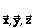
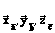
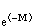
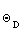
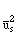
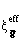
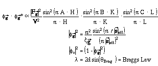
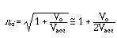
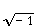
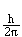

Distributed By: Virtual Labs
The Mathematics of Desktop Microscopist
The following chapter is not meant to be a complete description of all the
mathematics built into Desktop Microscopist. Rather, the important mathematical
and geometrical manipulations are described in brief sketches and with little
explanatory information. This section is supplied simply as a reference
for any crystallographer who is curious and disagrees with results calculated
by the program. If there are any questions, potential errors or unjustified
assumptions, please let Virtual Laboratories know of the concern.
- The several pages list variables and constants used by Desktop Microscopist.
These pages are followed by supporting equations. Listed below are some
of the primary equations and diagrams which are included in the last pages
of this chapter.
- Math:Lattice parameters to x,y,z;: The following equations calculated
the transformation matrix which converts hkl Miller indices into Cartesian
coordinate positions.
- I. .i.Math:Structure Factor Equations;: Desktop Microscopist uses
these equations to calculate the intensity at a given reciprocal lattice
position based on the defined unit cell. .c2.Structure Factor Equations;
- 1. The .i.Math:Ewald Sphere Construction; and .i.Math:Selected Area
Diffraction;: This contains a brief description of the reciprocal lattice,
the use of the Ewald sphere and the effect of crystal thickness on the spread
of reciprocal lattice points. .c2.Ewald Sphere Construction;
- 1. Conversion of three index to four Miller indices and vice versa.
This simple set of equations converts between the different methods for
indicating hexagonal crystal plane and directions..i.Math:Conversion of
Miller Indices; .c2.Conversion Between 3 & 4 index Miller Indices
- I. .i.Math:Determination of HOLZ lines;: The determination of HOLZ
lines (Higher Order Laue Zone) by Desktop Microscopist uses two different
variants of the kinematic assumption. The two methods are described and
illustrated by relevant diagrams. .c2.Determination of HOLZ Lines;
- 1. Calculations of transmission and reflection .i.Math:Laue patterns;:
Explains the effect of the continuum of Ewald spheres generated by a standard
Laue pattern and the changing geometry between the reflection and transmission
case. .c2.Calculations of Laue Patterns.
- 2. Determination of .i.Math:intensity and spot size;: The equation
used to calculate the spot size for the SAD pattern..c2.Determination of
Intensity and Spot Size;
- 3. Gives the Generalized .i.Math:d-spacing; equations and angle between
direction and planes which have been used in Desktop Microscopist..i.Math:Angles
Between Directions;.i.Math:Angles Between Planes; .c2.d-spacing, Angles
Between Directions & Planes;
- 4. .i.Math:Diffractometer Calculations;. Gives our .i.Lorentz polarization;
formula and calculation of 2q. .i.Math:Lorentz Polarization Formula; .c2.Diffractometer
and Lorentz Polarization Formula;
Basis Sets, Lattice Vector Sets, Lattice Definitions.c2.Basis
Sets and Lattice Vector Sets
= Vuc = unit cell volume
Vr.u.c = volume of the reduced unit cell (Primitive).
= basis vector for unit cell, = a = unit cell
parameter
= basis vector for unit cell, = b = unit cell
parameter
 = basis vector for unit cell, = c = unit cell
parameter
= basis vector for unit cell, = c = unit cell
parameter
a(alpha) = angle between and .
b(beta) = angle between and.
c(gamma) =angle between and.
rl,rl,rl= basis vectors
for reciprocal unit cell.
= Cartesian basis set.
 = Cartesian basis vector set related to real lattice
basis set.
Thermal Parameters:
= Debye-Waller factor.
= Debye Temperature.
= Mean square displacement of atom in direction ^ to
Bragg plane.
Definitions of often used terms:.
Crystal = A physically sensible collection of atoms arranged on a lattice.
Unit Cell = A set of atoms plus a set of lattice basis vectors.
Primitive Unit Cell = Smallest unit cell which can repeat to form a crystal.
Lattice = mathematical construct consisting of three basis vectors which
can fill all space.
Reciprocal Lattice = A lattice which exists in reciprocal space and has
a specific rigorous mathematical relationship to a corresponding lattice
in real space.
Basis Vectors = A set of three vectors, not necessarily orthogonal, used
to define the shortest repeating vectors in real space which can generate
the desired crystal lattice.
Explanation of Miller and Miller-Bravais Notation:
h,k, l = Integer variables which are used to designate planes.
(h,k, l) = When encased in parentheses, (h, k, l) indicates a specific plane.
{hk, l} = When encased in braces, {h, k, l} indicates a family of planes.
v, w = Integer variables which are used to designate directions.
v, w] = When encased in square brackets, [u, v, w] indicates a specific
direction.
v, w> = When encased in angle brackets, <u, v, w> indicates a family
of directions.
(hM, kM, iM, lM) = Four index Miller-Bravais system for planes in hexagonal
crystals where h + k + i = 0.
(hM, kM, iM, lM) = Four index Miller-Bravais system for directions in hexagonal
crystals.
(delta)x(n)= Total displacement (scalar) of a
unit cell by a strain field at position n.
Experimental and Fundamental Definitions:
l(lambda) = Wavelength of the particle (electron).
= Momentum vector for accelerated electrons.
= Velocity vector for accelerated electrons.
Eki = Kinetic energy of the electron.
q or qBragg = Bragg angle.
Q = Measure angle.
cl = Camera Length, given in mm.
cc = Camera Constant, given in mm-Å.
917. (| ne| - kl) = The distance in mm between the
Kikuchi line and the diffraction spot, as measured from the negative.
918. | ne| = The measured distance between the transmitted
spot and a diffracted spot, usually in mm.
919. d = d-spacing. The distance between planes, usually given in Å.
920. Dlz = Diameter of the nth Laue zone ring, measured in mm.
921. lz,a = Periodicity of Lattice || to zone axis, in Å.
922. nri = Refractive index.
923. V0 = Average crystal potential in V.
924. Vacc = Accelerating potential for electron beam.
Extinction Distance:
= Extinction Distance. Based on the kinematic
assumption, the distance in Å through which the full intensity would
be diffracted to the exited beam.
 = The effective extinction distance when the crystal
orientation deviates from the Bragg angle.
Solutions to Wave Equations:

Refractive Index

Constants
936. mo = Mass of an electron -- 9 x 10-31 kg
937. i =  , denotes an imaginary number.
938. = 3.14156, the ratio of a circles circumference to its diameter.
939. h = 6.626196 x 10-3 J-s Planck's constant.
940. h = 
941. c = 3 x 108 m/s. the speed of light.
942. e = 1.6021917 x 10-19 C. The charge of an electron.
943. e = 2.718281828
Author: J.ames T.
Stanley
 Desktop
Manual
Desktop
Manual
Distributed By: Virtual
Labs
Last Updated:1/12/96 Sat, Apr 27, 1996